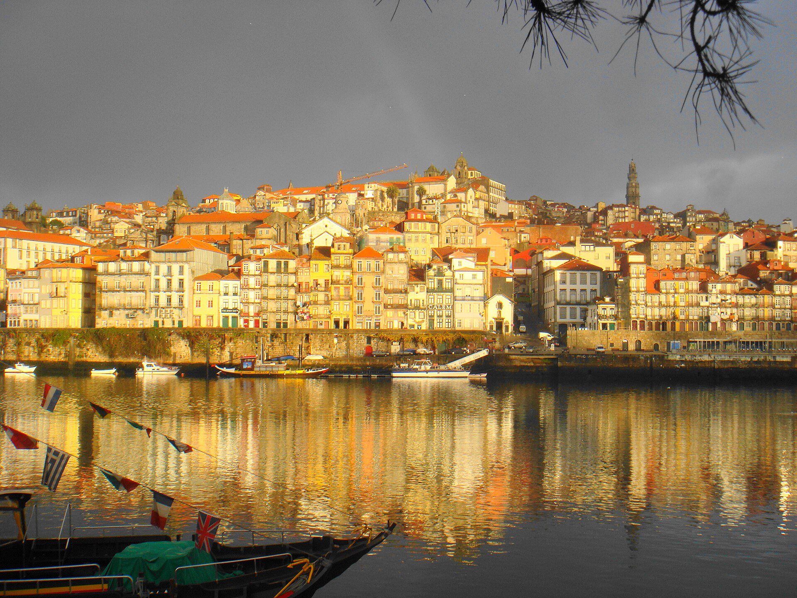
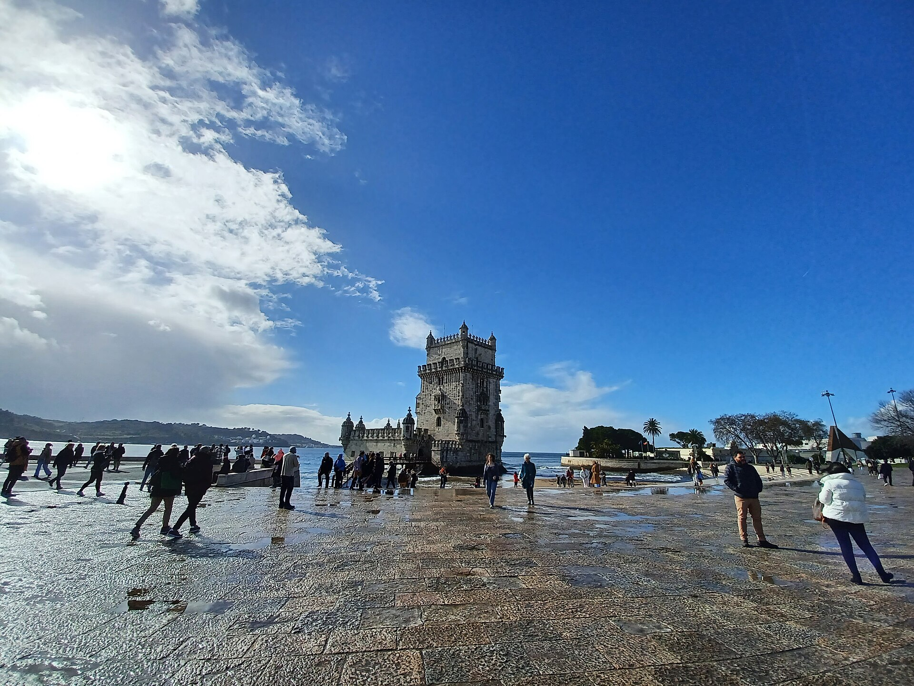
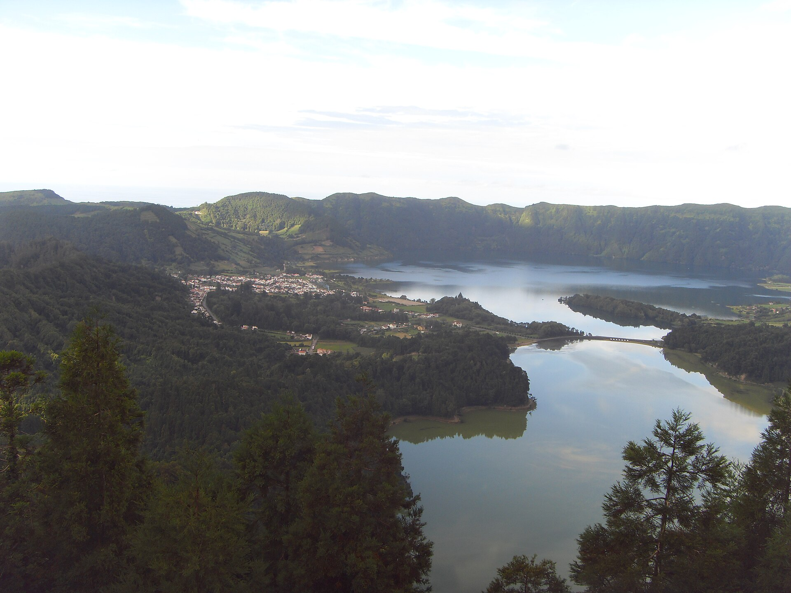

Lisboa e Vale do Tejo
Lisboa
A capital luminosa é marcada por colinas, miradouros, bondes e bairros históricos.
Alfama e seus miradouros

Muitos destinos em um só país
Portugal reúne cidades antigas, palácios coloridos, vilas medievais, ilhas vulcânicas e uma costa recortada por praias e falésias.
As distâncias convidam a combinar diferentes paisagens em uma mesma viagem, sempre com tempo para observar a arquitetura, a natureza e o cotidiano local.
Primeiras paradas
Quatro destinos que apresentam diferentes paisagens, ritmos e capítulos da história portuguesa.
Lisboa e Vale do Tejo
A capital luminosa é marcada por colinas, miradouros, bondes e bairros históricos.
Alfama e seus miradouros

Norte
Fachadas coloridas e ruas que acompanham o encontro entre o Douro e o Atlântico.
Ribeira e Ponte D. Luís I
Lisboa e Vale do Tejo
Palácios, jardins e bosques criam uma paisagem cultural cercada de romantismo.
Palácio Nacional da Pena

Sul
Falésias douradas, praias de águas claras e pequenas cidades voltadas para o oceano.
Praia da Marinha e a costa
Arquitetura e memória
Monumentos que ajudam a compreender a formação do país, suas viagens e sua vida cultural.

Lisboa
Um dos símbolos das navegações portuguesas às margens do rio Tejo.

Lisboa
Arquitetura manuelina, claustros detalhados e séculos de história.

Lisboa
Muralhas antigas e uma vista privilegiada sobre a capital portuguesa.

Centro · Coimbra
Uma das universidades mais antigas da Europa e referência da vida acadêmica.
Além das cidades
Vales, ilhas e praias revelam um lado de Portugal moldado pelo oceano e por formações naturais singulares.

Norte
Encostas cultivadas acompanham o rio em uma das paisagens mais características do país.

Atlântico

Atlântico
Sul
Ideias para começar
Sugestões ilustrativas para organizar destinos de acordo com o tempo disponível.
03 dias
Lisboa, Belém e Sintra
Um dia pelos bairros e miradouros de Lisboa, outro em Belém e o terceiro entre os palácios de Sintra.
07 dias
Lisboa, Sintra, Coimbra e Porto
Combine a capital e Sintra com uma parada em Coimbra e alguns dias para descobrir o Porto.
10 dias
Portugal de norte a sul
Comece no Porto e no Douro, siga por Coimbra, Lisboa e Sintra e termine junto ao mar no Algarve.
Antes de viajar
Pequenas escolhas podem tornar o roteiro mais tranquilo e responsável.
Use trens entre as principais cidades e transporte público nos centros urbanos. Confira as conexões antes de sair.
Primavera e início do outono costumam ser boas opções. Considere o clima de cada região e o movimento nas férias.
Confira nos sites oficiais os horários e as condições de visita. Reserve atrações concorridas com antecedência.
Agrupe atrações próximas, respeite áreas protegidas e reserve tempo para os deslocamentos e as pausas.
Continue explorando
Fotografias reais, obtidas no Wikimedia Commons. Os sete arquivos novos são versões de 1280 pixels fornecidas pelo Commons, sem edição adicional. As quatro fotografias já existentes no projeto foram preservadas. As imagens são redimensionadas e recortadas apenas na exibição; as adaptações de fotografias CC BY-SA mantêm a respectiva licença.